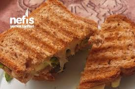
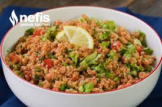
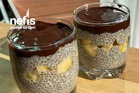

Diyet Tost Tarifi

Diyet Tost Tarifi için Gerekli Malzemeler;
2 dilim çavdar ekmeği
1 dilim beyaz peynir
Yarım domates
2-3 yaprak roka
1 yaprak taze soğan
5 tane zeytin
Hazırlanışı;
Çavdar ekmeğine beyaz peyniri yayıyoruz. Üzerine domates dilimlerini sıralıyoruz. Roka ve taze soğanı da koyduktan sonra zeytinleri koyup diğer ekmeği üzerine kapatıyoruz. Zeytin çekirdekleri sizi rahatsız ederse, çıkarma konusunda kendinize güvenemezseniz doğrayarak yapabilirsiniz. Tost makinesinde pişiriyoruz. Sıcak servis yapıyoruz.
Kabak Spagetti
Kabak Spagetti Tarifi için Gerekli Malzemeler;
4 kabak
4 yemek kaşığı zeytinyağı
Tuz
Sosu için;
2 yemek kaşığı zeytinyağı
2 diş sarımsak
1 yemek kaşığı salça
1 domates
Tuz
Karabiber
Pul biber
3 yemek kaşığı sıcak su
Hazırlanışı;
1. Kabağı ince şeritler halinde keselim.
2. Tencereye zeytinyağını alalım.
3. Üzerine kabakları ekleyerek karıştıralım.
4. Yeteri kadar tuz ilave edip bir kaç dakika kavuralım.
5. Sosu için tencereye zeytinyağını alalım.
6. Rendelenmiş sarımsağı ilave edip kavuralım.
7. Salça, rendelenmiş domates, tuz, karabiber, pul biber ve suyu ilave ederek 5 dakika pişirelim.
8. Kavurduğumuz kabakları da ekleyerek bir kaç dakika daha pişirelim.
9. Kabak spagettimiz servise hazır. Afiyet olsun.
Meyveli Yulaflı Kurabiye Tarifi
SIFIR ŞEKER
Yulaflı Kurabiye Tarifi için Gerekli Malzemeler;
1. 1 yumurta akı
1 adet muz
4 adet hurma
1 kuru incir
Yarım çay bardağı kuru üzüm
Yarım çay bardağı kırılmış ceviz
1 çay kaşığı kabartma tozu
1 su bardağı yulaf ezmesi
Hazırlanışı;
1. Yoğurma kabına yumurta akını alarak çırpıcı ile çırpalım.
2. Muzu ekleyerek çatal ile iyice ezelim.
3. Doğranmış hurma, kuru incir, kuru üzüm ve kırılmış cevizi ekleyerek güzelce karıştıralım.
4. Kabartma tozu ve yulaf ezmesini ekleyerek tekrar karıştıralım.
5. Harcımızdan parçalar alarak yuvarlayalım ve hafif bastırarak şekil verelim.
6. Pişirme kağıdı serili fırın tepsisine yerleştirdiğimiz kurabiyelerimizi önceden ısıtılmış 160°C fırında 20 dakika pişirelim.
7. Biz bu ölçülerle 9 adet kurabiye elde ettik. Afiyet olsun.
Kinoalı Diyet Kısır Tarifi

Kısır Tarifi için Gerekli Malzemeler;
300 gram Kinoa
1 domates
2 tane taze soğan
2 diş sarımsak
2-3 yaprak marul
Salatalık
İsteğe göre maydanoz
Sosu İçin;
1 yemek kaşığı sıvı yağ
2 yemek kaşığı salça
İsteğe göre bir kuru soğan
Hazırlanışı;
Kinoalarımızı yıkayıp süzdükten sonra tencereye koyuyoruz ve üzerini kaplayacak şekilde su döküyoruz. Kısık ateşte pişiriyoruz ve ocaktan alıyoruz.
10-15 dakika dinlenen kinoayı bir kaba alıyoruz ve salçamızı yağda kavurmaya başlıyoruz (dilerseniz kuru soğan ekleyebilirsiniz).
Kavurduğumuz sosu kinoamıza döküyoruz ve karıştırıyoruz.
Ardından domatesi, taze soğanı, sarımsağı, marulu ve salatalığı doğrayıp kısıra ekliyoruz. Son kez karıştırdıktan sonra kısırımız hazır. İsteğe göre tuz ve nar ekşisi ekleyebilirsiniz.
Chia Puding Tarifi

Chia Puding Tarifi için Gerekli Malzemeler;
Chia Puding Tarifi İçin Malzemeler
3 yemek kaşığı chia tohumu
1 yemek kaşığı dövülmüş ceviz
1 tatlı kaşığı bal
1 su bardağı süt
1 adet muz
Hazırlanışı;
Chia tohumunu, cevizi, balı ve sütü iyice karıştırıp buzdolabında 1-2 saat bekletiyoruz.
Kıvam alan pudingimizi kaselere bölüştürüp aralarına muz koyuyoruz.
Üstüne de benmari usülü eritilmiş çikolataları koymayı unutmayın!.